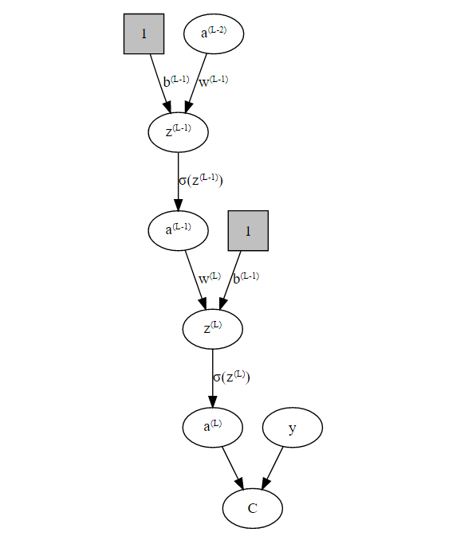

Neural networks, especially deep neural networks, have received a lot of attention over the last couple of years. They perform remarkably well on image and speech recognition and form the backbone of the technology used for self-driving cars.
What many people find hard to believe is that the mathematics of neural networks have been around for quite some time already. For example, Kurt Hornik proofed the universal approximation theorem of neural networks in 1991 (see Approximation capabilities of multilayer feedforward networks). The theorem states that neural networks can under mild assumptions approximate arbitrary functions. As we will see, training a neural network is equivalent to solving a very complex multi-dimensional optimization problem. The backpropagation algorithm used to train many neural networks has been around since about the 1960s, but only the vast increase in compute power from cpus and gpus over the last years made training more complex neural networks computationally feasible.
The mathematical reasons for why neural networks perform so well in practice for many tasks such as image classification are still poorly understood though. A very interesting article by Quanta Magazine ‘Machine Learning Confronts the Elephant in the Room’ highlights a very fundamental issue with neural nets: they can easily be confused in potentially serious ways. Researchers found that a neural network that was able to classify objects in a room correctly with high confidence was derailed when they added an elephant to the picture. The network misidentified a chair as a couch and failed to spot objects it found earlier. While such hicups might seem funny at first glance, imagine a self-driving car suddenly ignoring a child, because it saw a person in an elefant costume before.
I strongly believe that getting an understanding of how neural nets work is essential to get a feeling for when they might not work so well or even fail completely at a given task.
In this blog post, I want to show that if you trained linear regression models, you where already training neural nets (although super simple ones:). I will then go on to derive a slightly more complex neural network from scratch to give an insight into the mathematics behind how training a neural net works.
Suppose we have the following simple linear regression model:
\[y_i = b + \omega_1 x_{i, 1} + \epsilon_i\] with
\[z = b + \omega_1 x_{i, 1}\]
Graphically, our model looks like this:
The activation function \(\sigma\) decides how a neuron/node ‘fires’ given its activation. In the linear regression case we have \(\sigma() = id()\), i.e. \(\sigma()\) equals the identity function.
The constant input 1 with coefficient \(b\) is called the bias in neural network literature and the model and \(w\) is called weight.
The standard way to ‘learn’ the coefficients (\(w^{(1)}\) and \(b\) in this case) for a linear regression model is to use OLS as our training algorithm, assuming that we want to minimize the squared loss \[(a - y)^2\] between our prediction \(a\) and actual results \(y\). However, since linear regression is basically just a very simple neural network, we can also find our coefficients using backpropagation.
The following exposition is based on the excellent explanation of backpropagation by 3Blue1Brown and on Michael Nielsen’s equally great free online book.
Before we start to look at the backpropagation algorithm in detail, we need to introduce two important assumptions for our cost function for backprop to work:
Both assumptions hold, if we use the squared loss, aka a quantratic cost function.
We will now create a slightly more complex example than the linear regression model from above by adding a single hidden layers to our network: 
So, now the question is: How do we find the optimal weights \(w^{(1)} \dots w^{(L)}\) and biases \(b^{(1)} \dots b^{(L)}\)in our network such that we minimize our cost function \(C\)? We need to solve an optimization problem and to do that we need to calculate the gradient of the cost function: \[ \nabla C = \begin{bmatrix} \frac{\partial C}{\partial w^{(1)}} \\ \frac{\partial C}{\partial b^{(1)}} \\ \vdots \\ \frac{\partial C}{\partial w^{(L)}} \\ \frac{\partial C}{\partial b^{(L)}} \\ \end{bmatrix} \] so we can use the Gradient Descent algorithm to find a (local) optimum. Specifically, we will update the weights in each iteration like so: \[ \begin{align} w^{(l)} &\rightarrow w^{(l)} - \eta \frac{\partial C}{\partial w^{(l)}} \\ b^{(l)} &\rightarrow b^{(l)} - \eta \frac{\partial C}{\partial b^{(l)}} \end{align} \] where \(\eta\) is the gradient step-size also called learning rate.
So the question now becomes:
How do we calculate \(\nabla C\)?
As we can see from our graph, there are 3 ways how we can change the output from our network:
We have the following relations for layer \(L\): \[ \begin{align} C(a^{(L)}) & = (a^{(L)} - y)^2 \newline z^{(L)} & = w^{(L)}a^{(L-1)}+b^{(L)} \newline a^{(L)} & = \sigma(z^{(L)}) \end{align} \]
Using the chain rule we get: \[ \frac{\partial C}{\partial w^{(L)}} = \underbrace{ \frac{\partial C}{\partial a^{(L)}} \frac{\partial a^{(L)}}{\partial z^{(L)}} }_{ =\frac{\partial C^{(L)}}{\partial z^{(L)}} =: \delta^{(L)} } \underbrace{ \frac{\partial z^{(L)}}{\partial w^{(L)}} }_{ =a^{(L-1)} } \] We define the error \(\delta^{(L)} := \frac{\partial C^{(L)}}{\partial z^{(L)}}\), because it tells us how strongly the cost function changes based on changes to \(z^{(L)}\).
We have:
\[ \begin{align} \delta^{(L)} &:= \frac{\partial C}{\partial z^{(L)}} = \frac{\partial C}{\partial a^{(L)}} \frac{\partial a^{(L)}}{\partial z^{(L)}} \\ &=2(a^{(L)} - y) \sigma'(z^{(L)}) &\text{... error output layer} \\ \delta^{(L-1)} &= \frac{\partial C}{\partial z^{(L-1)}} = \frac{\partial C}{\partial a^{(L-1)}} \sigma'(z^{(L)}) \\ &= \underbrace{ \frac{\partial C}{\partial a^{(L)}} \frac{\partial a^{(L)}}{\partial z^{(L)}} }_{=\delta^{(L)}} \underbrace{ \frac{\partial z^{(L)}}{\partial a^{(L-1)}} }_{w^{(L)}} \sigma'(z^{(L)})\\ &= \delta^{(L)} w^{(L)}\sigma'(z^{(L)}) &\text{... error hidden layer} \end{align} \] or more generally: \[ \delta^{(l)} = \frac{\partial C}{\partial z^{(l)}}= \delta^{(l+1)} w^{(l+1)}\sigma'(z^{(l)})\text{ ... l-th error hidden layer} \] So: \[ \frac{\partial C}{\partial w^{(l)}} = \delta^{(l)}a^{(l-1)} \] Now we repeat the steps from above to get: \[ \frac{\partial C}{\partial b^{(l)}} = \frac{\partial C}{\partial a^{(l)}} \frac{\partial a^{(l)}}{\partial z^{(l)}}\frac{\partial z^{(l)}}{\partial b^{(l)}}=\delta^{(l)}1 \]
We can now calculate our gradient above if we walk backwards from the output the the input layer, hence the name ‘backpropagation’:)
The backprop equations for a ‘multivariate’ setting are: \[ \begin{align} \delta^{(L)} &= \nabla_a C \odot \sigma'(z^{(L)})\\ \delta^{(l)} &= ((w^{(l+1)})^T\delta^{(l+1)}) \odot \sigma'(z^{(l)}) \\ \frac{\partial C}{\partial b^{(l)}_j} &= \delta^{(l)}_j \\ \frac{\partial C}{\partial w^{(l)}_{j,k}} &= \delta^{(l)}_ja^{(l-1)}_k \end{align} \] where \(j,k\) refers to the \(j\) and \(k\) neuron and \(\odot\) is the so called ‘Hadamard product’, i.e. the elementwise matrix product.
I hope you found my post helpful. If you find any errors, just open a Github issue.